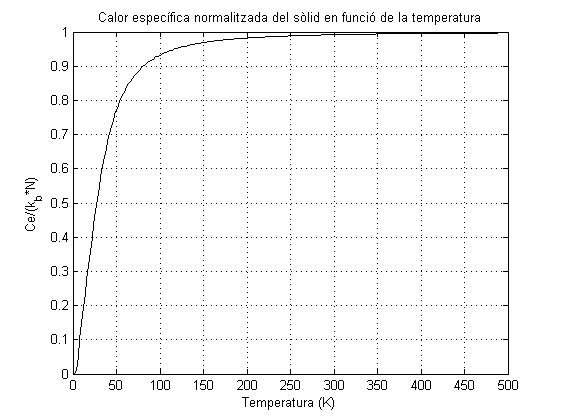

% MODEL DEL SÒLID DE DEBYE EN 1D clear all; close all; % Definició de les constants. c = 4.2906*10^(-10); % Paràmetre de xarxa. a = sqrt(3)*c/2; % Distància entre enllaç. vs = 3200; % Velocitat del so. m = 4*10^(-26); % Massa. C = m*(vs/a)^2; % Constant elàstica. h = 6.62606957*10^(-34); % Constant de Planck. h_d = h/(2*pi); % Constant de Dirac. k_b = 1.38064852*10^(-23); % Constant de Boltzmann. N = 7; % Número d'àtoms. L = N*a; % Longitud del sòlid. % Definició dels paràmetres dels modes normals. phi = zeros(1,N); % Fase inicial. k = [0:2*pi/L:2*pi/a] - (pi/a); % Número d'ona. k = k(1:end-1); % Traiem l'últim que és igual al primer. w0 = sqrt(C/m); % Freqüència base. w = 2.*w0.*abs(sin(k.*a./2)); % Relació de dispersió d'ona. % Calculem ara la capacitat calorífica de la cadena. Per fer-ho cal derivar % l'energia respecte la temperatura. Com que tan sols l'energia de cada mode depèn de la % temperatura, la derivem i calculem C. Cep = []; % Vector de calors específiques. for T = 0:2:500 % Càlcul de C per diferents temperatures. % Redefinim les variables per a una T qualsevol. beta = 1/(k_b*T); % Factor beta n_b = 1./(exp(beta.*h_d.*w) - 1); % Factor d'ocupació de Bose. E = h_d.*w.*(n_b + 1/2); % Energia per a freqüència. Ep = k_b*(beta.*h_d.*w).^2.*exp(beta.*h_d.*w).*((n_b).^2); % dE/dT per a cada mode A = sqrt(2.*E./C); % Amplitud Ap = (1./sqrt(2.*E.*C)).*Ep; % Amplitud derviada respecte la temperatura vip = []; % Definim el vector que emmagatzemarà la velocitat derivada de cada un dels àtoms. vi = []; % Definim el vector que emmagatzemarà la velocitat de cada un dels àtoms. xpt =[]; % Definim el vector que emmagatzemarà la posició derivada de cada un dels àtoms. xt = []; % Definim el vector que emmagatzemarà la posició de cada un dels àtoms. t = 5*10^(-16); Eptot = []; for n = 0:N-1 % Càlcul de posicions per a l'energia potencial xn = n*a; yn = sum(A(1:N).*cos(-k(1:N).*xn + phi + t.*w(1:N))); x = yn; xt = [xt, x]; % Càlcul de les posicions derivades respecte T ypn = sum(Ap(1:N).*cos(-k(1:N).*xn + phi + t.*w(1:N)) ); xp = ypn; xpt = [xpt, xp]; % Càclul de les velocitats vn = sum(-A(1:N).*w(1:N).*sin(-k(1:N).*xn + phi + t.*w(1:N)) ); vi = [vi, vn]; % Càlcul de les velocitats derivades respecte T vnp = sum(-Ap(1:N).*w(1:N).*sin(-k(1:N).*xn + phi + t.*w(1:N)) ); vip = [vip, vnp]; % Emmagatzemem les velocitats de cada un dels àtoms per cada instant. end Epct = sum(m.* vi(1:N).* vip(1:N)); %Per cada instant, calculem l'energia cinètica total de la cadena (la suma de la de tots els àtoms). Eppt = sum(C.*xt(1:N).*xpt(1:N)); Eptot = [Eptot, Epct + Eppt]; %Emmagatzem l'energia anterior. Cep = [Cep, Eptot/(N^2*k_b)]; % Per cada temperatura emmagatzemem la calor específica. end T = [0:2:500]; % Representem la calor específica en funció de la temperatura. figure(2) plot(T,Cep, 'k'); xlabel('Temperatura (K)') ylabel('Ce/(k_b*N)') title('Calor específica normalitzada del sòlid en funció de la temperatura') grid on;